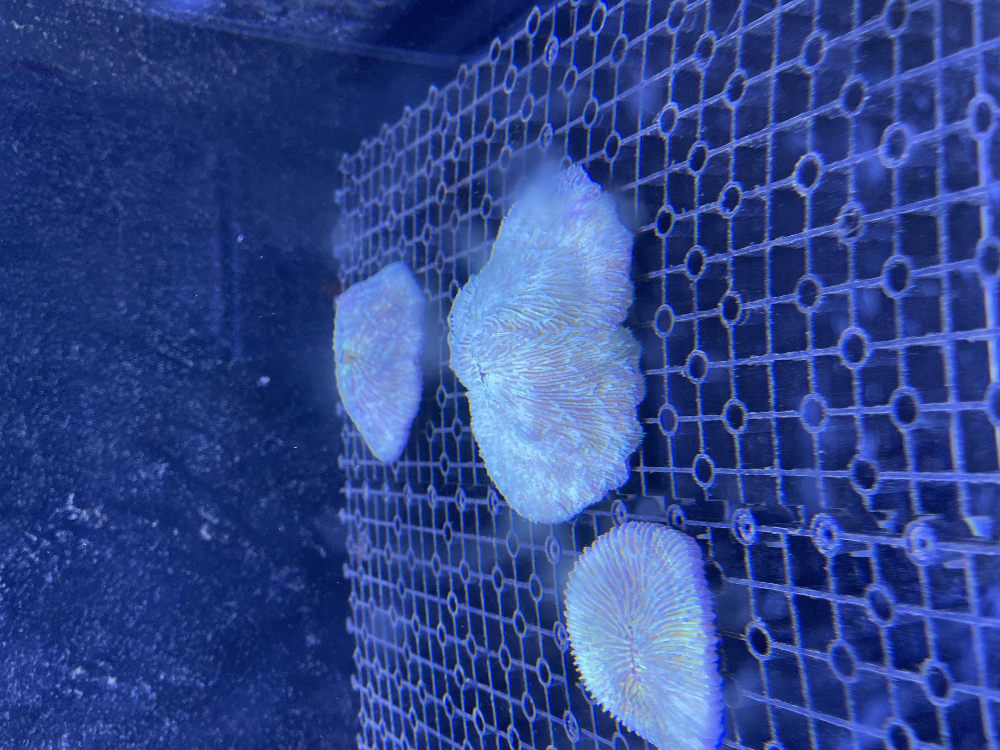
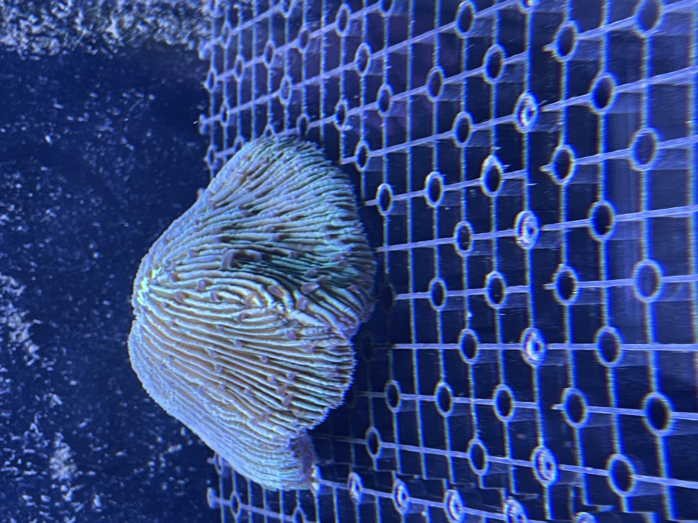

形态特征
飞盘珊瑚属单体珊瑚盘长约15–35厘米，前后端圆润，低矮骨肋如车轮辐条般放射。中央纵沟分布多个口部，食物可沿黏液轨道汇入。珊瑚体可鼓起数厘米形成软垫，缓冲沙粒摩擦并防止骨骼折断。
飞盘珊瑚属Ctenactis，在观赏水族领域常被称为“飞盘珊瑚”或“马蹄形珊瑚”，是一类形态非常独特的大型单体珊瑚。


飞盘珊瑚属单体珊瑚盘长约15–35厘米，前后端圆润，低矮骨肋如车轮辐条般放射。中央纵沟分布多个口部，食物可沿黏液轨道汇入。珊瑚体可鼓起数厘米形成软垫，缓冲沙粒摩擦并防止骨骼折断。
飞盘珊瑚属主要栖息于印度洋和太平洋的温暖海域。其具体分布从西部的红海和东非海岸开始，一直向东延伸，遍布东南亚诸岛、澳大利亚大堡礁，直至中太平洋的诸多岛屿。它们通常偏好生活在水质清澈、光线良好的浅海珊瑚礁区，常见于礁坡或礁坪的沙质或碎屑底质上。
飞盘珊瑚属是重要的造礁石珊瑚，在构建珊瑚礁骨架方面发挥着关键作用。同时，其独特的形态为许多小型海洋生物，如虾、蟹或小鱼，提供了宝贵的栖息地和庇护所，帮助它们躲避天敌。